Email: Type the email address the program has for you.Password: Type your password. Passwords are stored only as scrambled hashes.Sign in: Opens your pathway. Five wrong tries lock the email for 15 minutes.First time here, or forgot your password?: Click this the first time you sign in, or whenever you forget your password.
Try the demo
Explore the demo opens four choices: View as a mentor/coach, View as a board president, View as a superintendent, and View as a site administrator. Use the demo role selector to switch; mentor/coach offers separate coach and mentor views. All are view only. Board president is a sample preview, not a board sign-in.
Demo superintendent logins sign in with their own email and the shared demo password. They act as their own sample superintendent and can click everything: enroll, mark sessions complete, turn in work.
Choose a role: Explore the demo opens four choices. Every public preview is view only and uses sample people.
Get around: tabs, Back, Help, and Sign out
The tabs under the title switch between My Pathway, Calendar, Course Catalog, Phases, Badges, Hours, Evaluation, and Standards Alignment. Evaluation is private to authorized roles; mentors do not see it. Admins also see Roster Dashboard and People & sign-in.
Back (top right) goes back one screen, for example from a class page to the calendar.
Help opens this guide. Sign out ends your session; you stay signed in for up to 2 hours of no use otherwise. If you are still signed in when you come back, the site shows Restoring your sign-in… while it checks.
While the site is working, a small note in the lower left says Saving… or Loading… (after 8 seconds, Still saving…). Keep the page open until it disappears; a change counts as saved only when its own message (for example Saved. or Turned in.) appears. Clicking a button twice sends it once.
Tabs: Switch between My Pathway, Calendar, Course Catalog, Phases, Badges, Hours, Evaluation, and Standards Alignment.
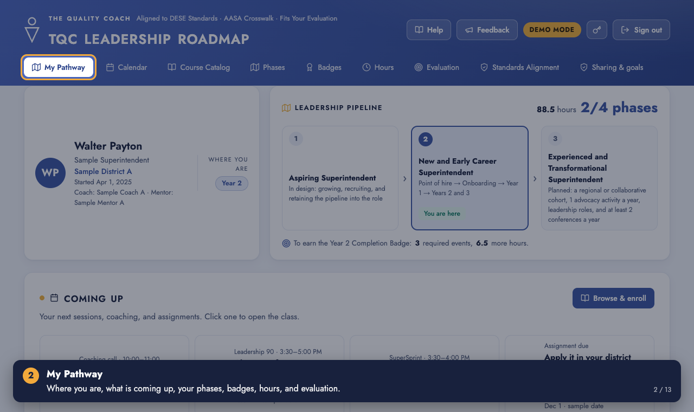
My Pathway: Where you are, what is coming up, your phases, badges, hours, and evaluation.
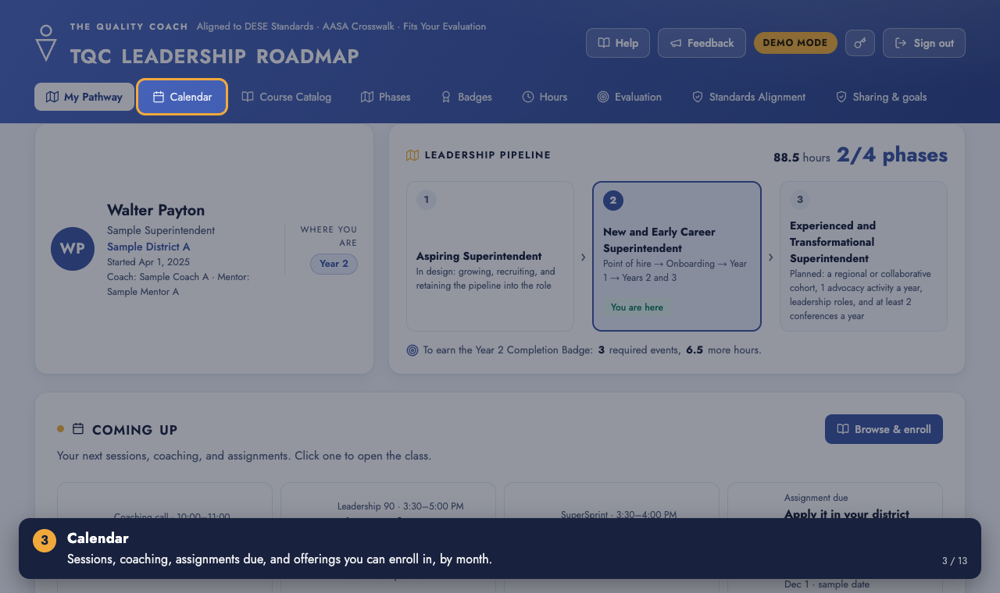
Calendar: Sessions, coaching, assignments due, and offerings you can enroll in, by month.
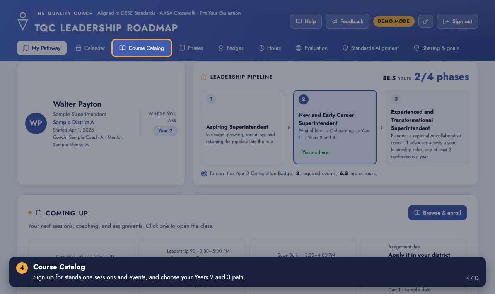
Course Catalog: Sign up for standalone sessions and events, and choose your Years 2 and 3 path.
Read the Hours tab
Open Hours to see category totals and the log of dates, phases, hours, and approval status.
Approved hours count toward phase badges; pending hours wait for a program administrator. Notes are shown only to authorized roles.
Log hours appears only when your role can submit entries. Mentors submit Mentoring hours only; MASA staff and public demo visitors view the totals without submitting.
Hours by category: Open Hours to see coaching, mentoring, and other learning totals.
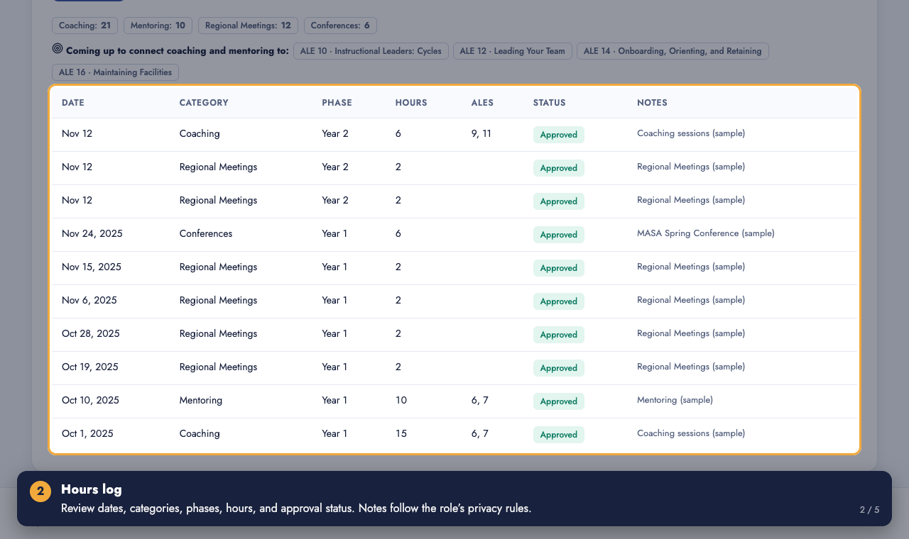
Hours log: Review dates, categories, phases, hours, and approval status. Notes follow the role’s privacy rules.
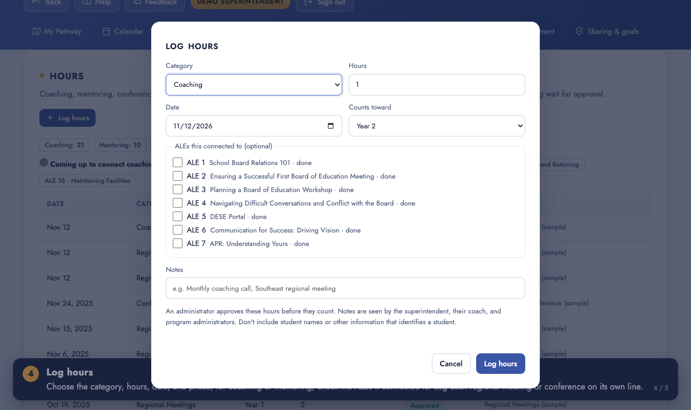
Log hours: Choose the category, hours, date, and phase; for coaching or mentoring, check the ALEs it connected to. Log each regional meeting or conference on its own line.
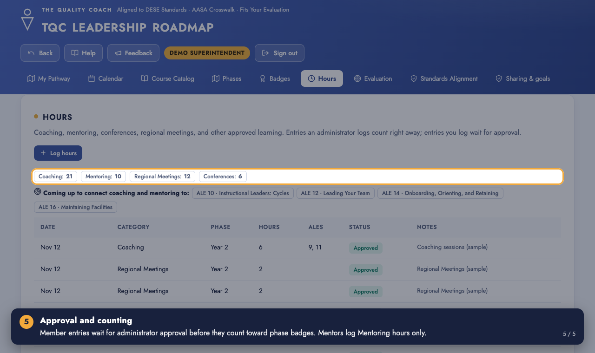
Approval and counting: Member entries wait for administrator approval before they count toward phase badges. Mentors log Mentoring hours only.
Course catalog and PD calendar
Open Course catalog and PD calendar from the sign-in page or the Course Catalog tab. Anyone can open it; it shows no one’s data.
It lists every session with its date and time when set, whether it is virtual or in person, the Superintendent Leadership Academy, and all 19 ALEs by stage. Filter by stage or delivery, or print it.
Send feedback about the site
Click Feedback at the top of any page. Rate how well the site works, say what is working and what should change, and click Send feedback.
Program administrators read it to decide what to change after the pilot.
Change your password
Click the key button at the top right.
Type your current password and the new one twice, then click Change password.
Demo logins don’t have their own password to change.
Change password: The key button changes your password.
Preview the mentor and coach roles
Click Explore the demo, then View as a mentor/coach. The coach preview opens a sample roster, and the sample coach also teaches courses (My classes).
Use View demo as to switch between Mentor/coach: coach view and Mentor/coach: mentor view. Coaches see what each superintendent shares with them (by default including notes and submitted work); mentors never see coaching notes. Neither sees the evaluation.
In the demo your changes stay in your browser. In a real sign-in, coaches and mentors see only the people assigned to them.
Mentor/coach: coach view: The coach preview shows a sample roster of their own people. Notes and goals follow each superintendent’s sharing choices.
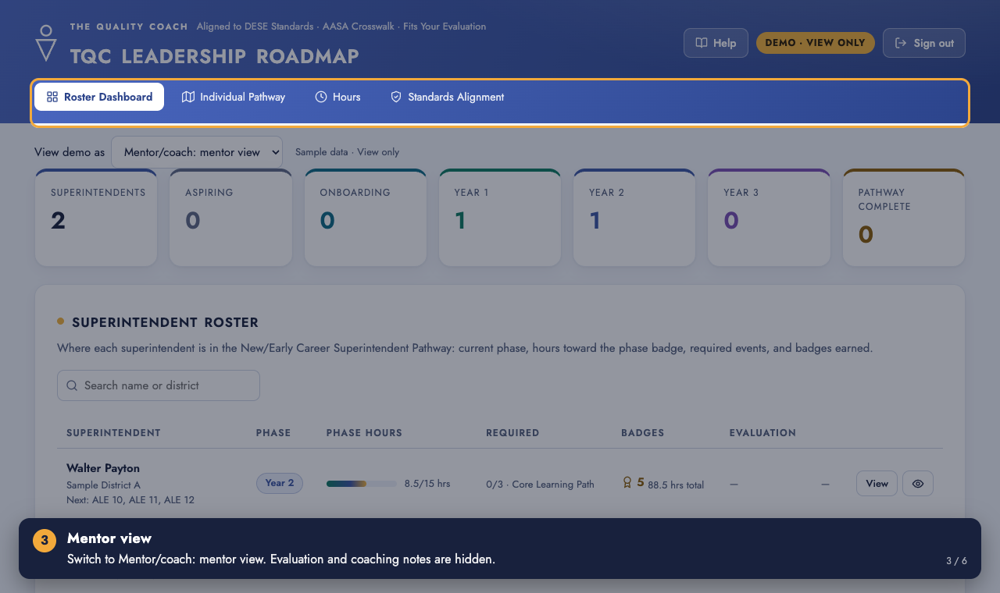
Mentor view: Switch to Mentor/coach: mentor view. Evaluation and coaching notes are hidden.
Preview the board president role
Choose View as a board president on the demo chooser, or Board president in View demo as.
A board president sees one page: one superintendent’s completed learning by DESE standard and the goals that superintendent chose to share. There is no roster, no courses, no hours log, and no coaching notes.
Switch to View as a superintendent and change Sharing & goals to see the board view change.
Superintendent preview: One sample pathway, with Calendar, Course Catalog, Phases, Badges, Hours, Evaluation, Standards Alignment, and Sharing & goals.
Preview the site administrator role
Choose View as a site administrator, or Site administrator in View demo as.
Explore the sample Roster Dashboard, individual pathways, and all their tabs. People & sign-in shows a sample list to explain account management.
Approvals are disabled and real accounts are never shown. Real administrators use their own sign-in for attendance, approvals, invitations, and account changes.
Site administrator preview: The sample roster and every pathway tab. In this public preview, approvals and changes are turned off.
For superintendents
Read your pathway
The top card shows where you are (Onboarding, Year 1, Year 2, or Year 3) and what is left for the current phase badge.
Click a phase card to see its required events, your Years 2 and 3 path, and the hours you have toward the badge.
Green means done. Each event shows its ALE number (the Authentic Learning Experiences from the Core Learning Essentials handout), format, hours, DESE standard, and the evaluation performance indicators it supports.
Where you are: Your phase (Onboarding, Year 1, Year 2, or Year 3), your coach, and your mentor.
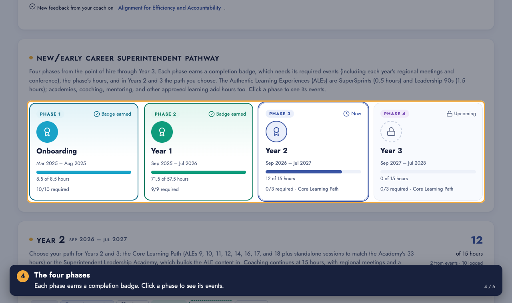
The four phases: Each phase earns a completion badge. Click a phase to see its events.
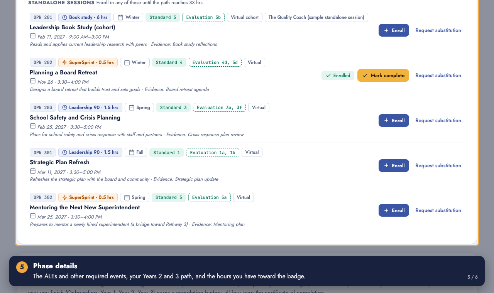
Phase details: The ALEs and other required events, your Years 2 and 3 path, and the hours you have toward the badge.
Regional meetings and conferences each year
Each year (Year 1, Year 2, and Year 3) you attend 4 or more regional meetings and at least 1 conference: the Spring Conference, Fall Conference, AASA Conference, or Women in Leadership Summit.
Log each one on the Hours tab (category Regional Meetings or Conferences). Each entry counts once toward the yearly number, and its hours count toward the phase.
The event row shows how many you have (for example, 2 of 4 attended). Tight Times Tuesdays is recommended, with a goal of attending at least 70% of the year’s sessions; log each one under Tight Times.
Leadership pipeline: Your total hours, phases completed, and what is left for the current phase badge.The four phases: Each phase earns a completion badge. Click a phase to see its events.Phase details: The ALEs and other required events, your Years 2 and 3 path, and the hours you have toward the badge.
Use the Phases tab
Open Phases. The four cards show Onboarding, Year 1, Year 2, and Year 3 with earned hours, required events, and badge status.
Click a phase card. Its detail lists required events, the Years 2 and 3 path, and learning hours for that phase. Onboarding is 8.5 hours (ALEs 1-5, 8, and 19); Year 1 is 57.5 (the Finance Academy, ALEs 6, 7, 13, and 15, mentor, and coach).
Click any class title to open materials, assignments, and completion information. Back returns to the selected phase.
Coming up: Your next sessions, coaching calls, and assignments due. Click one to open the class.The four phases: Each phase earns a completion badge. Click a phase to see its events.
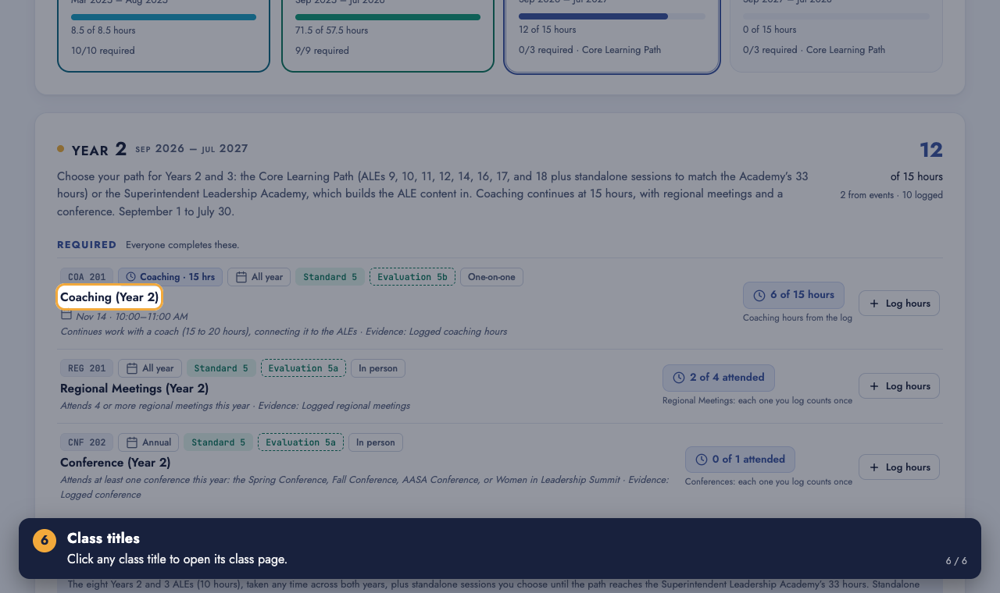
Class titles: Click any class title to open its class page.
Use the calendar
Click the Calendar tab. Use ‹ › to change months and Today to come back.
Colors: sessions, coaching, assignments due, offerings you can still enroll in, and completed classes.
Change months: Use ‹ and › to move between months, and Today to come back.
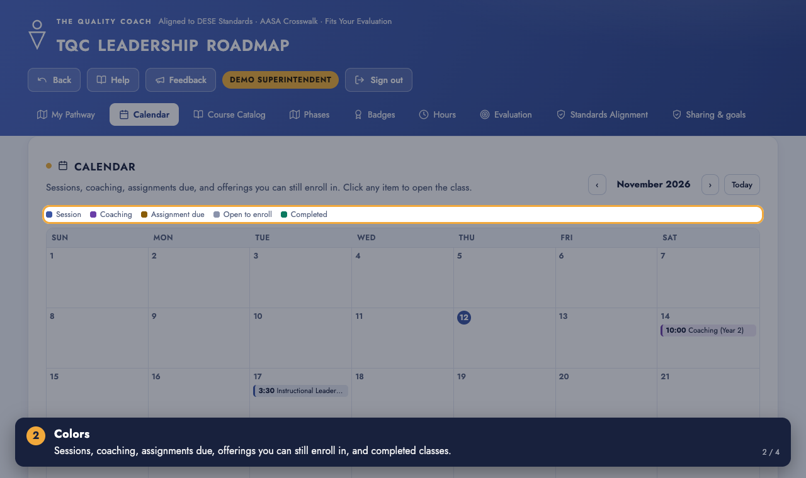
Colors: Sessions, coaching, assignments due, offerings you can still enroll in, and completed classes.
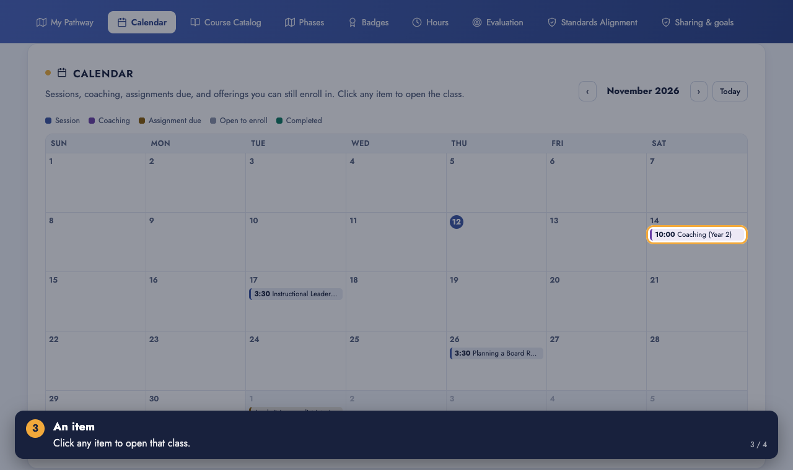
An item: Click any item to open that class.
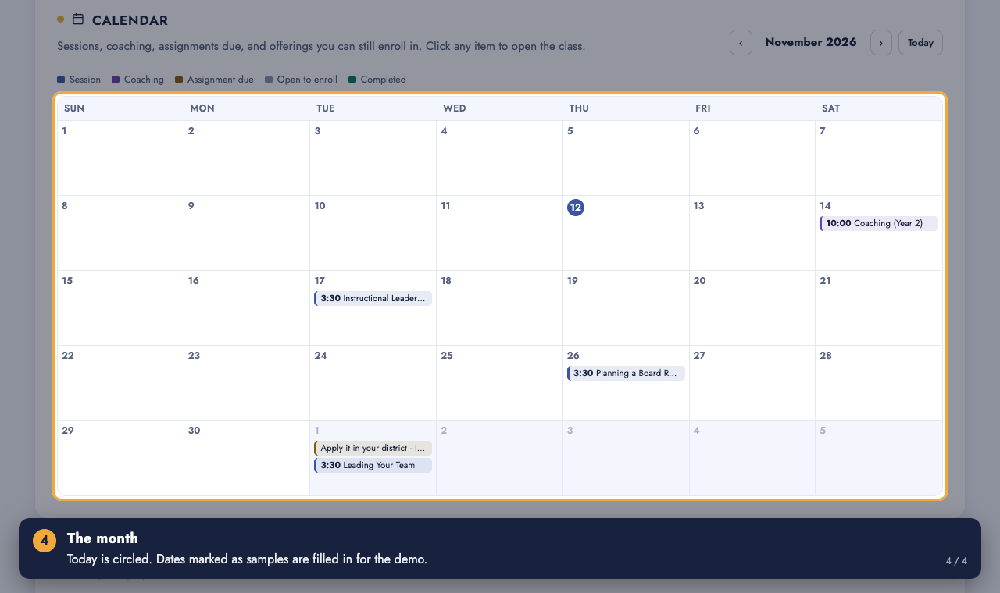
The month: Today is circled. Dates marked as samples are filled in for the demo.
Take a course: Home, Modules, and your progress
Click any class title (on My Pathway, Coming up, the Calendar, or the Course Catalog). The course opens with Home, Modules, Assignments, Discussions, Resources, and People on the left.
Home has announcements, the welcome, what you’ll learn, the syllabus, the session time and join link, and your instructor.
Modules lists the course by week or topic. Each item shows what it takes to finish (for example Turn it in or Score at least 60%) and a check when you’re done. A locked module opens when you finish the one before it or on its date.
The bar at the top shows your requirements done. Videos and pages play right in the course; opening one counts only toward “View it” requirements, never as finishing the course by itself.
A course you opened a moment ago reopens at once and then updates itself from the program’s records in the background, so dates, new items, and grades are always current.
Course navigation: Home, Modules, Assignments, Discussions, Resources, and People.
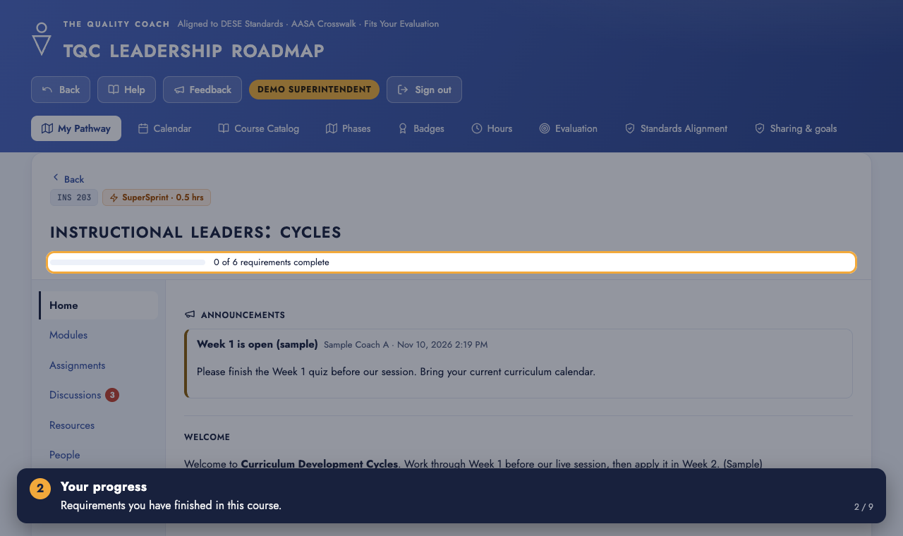
Your progress: Requirements you have finished in this course.
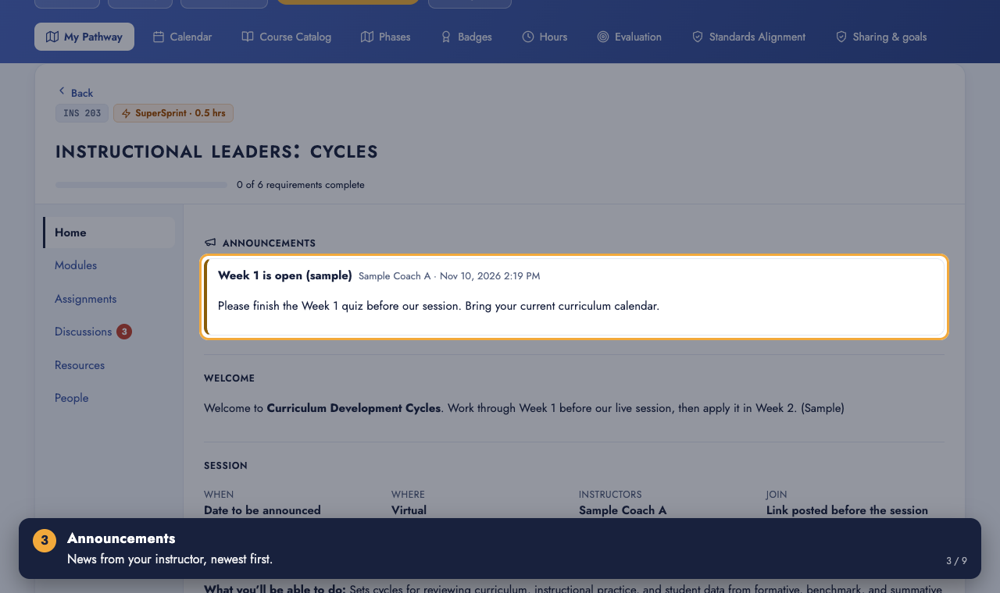
Announcements: News from your instructor, newest first.
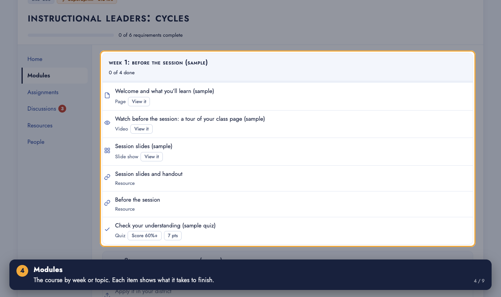
Modules: The course by week or topic. Each item shows what it takes to finish.
Get pathway credit for a course
When you finish every requirement in a course that includes real work (an assignment, a passing quiz, or a discussion post), it’s sent to your program administrator to approve for your pathway hours automatically.
For a live session without course requirements, click Mark complete, choose the date, and add a short reflection.
Either way it shows Waiting for approval until an administrator confirms it. A course counts once, toward its phase, standard, and badges; course grades never go into your evaluation.
Course navigation: Home, Modules, Assignments, Discussions, Resources, and People.Your progress: Requirements you have finished in this course.
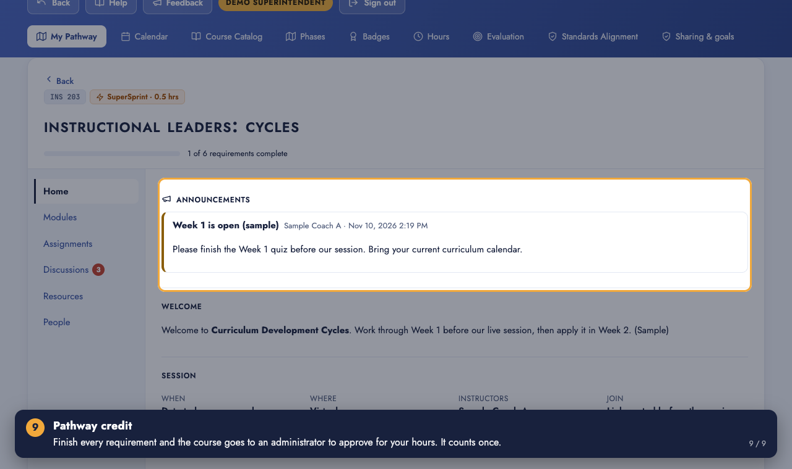
Pathway credit: Finish every requirement and the course goes to an administrator to approve for your hours. It counts once.
Turn in assignments and take quizzes
Open the assignment from Modules or Assignments. Read the instructions, rubric, and due date.
Write your response, add a link, or upload a file (PDF, Word, PowerPoint, Excel, or an image, up to 10 MB), then click Turn in.
Status shows Submitted, Submitted late, Missing, Needs revision (turn in a revision; earlier attempts are kept), or Reviewed with your score and feedback.
For a quiz, click Start the quiz, answer, and Submit. Most questions are scored at once; essay answers wait for your instructor. Your attempts and scores are listed.
Your progress: Requirements you have finished in this course.Modules: The course by week or topic. Each item shows what it takes to finish.
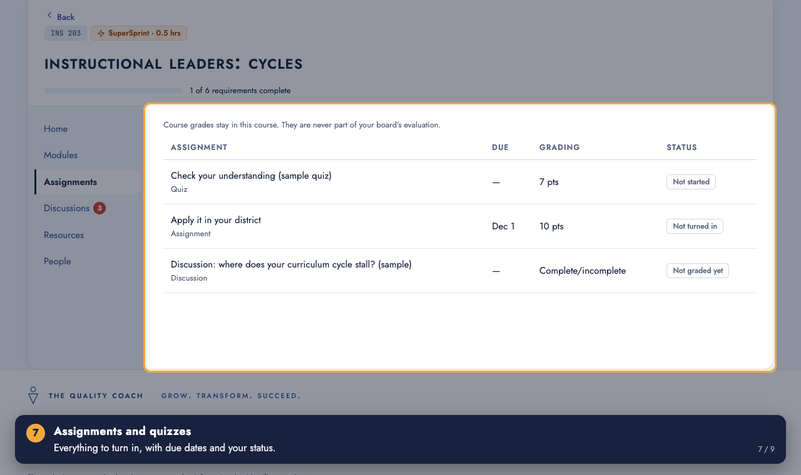
Assignments and quizzes: Everything to turn in, with due dates and your status.
Enroll in courses and events
Click the Course Catalog tab (or Browse & enroll in Coming up).
Offerings are listed by phase with dates. Click Enroll to sign up; it goes on your Coming up list and calendar.
Changed your mind? Click Drop. Required events and your path’s core ALEs are added for you.
For dates, times, and whether each session is virtual or in person, open Course catalog and PD calendar (link at the top of the catalog, and on the sign-in page).
Browse & enroll: Opens the Course Catalog (so does the Course Catalog tab).
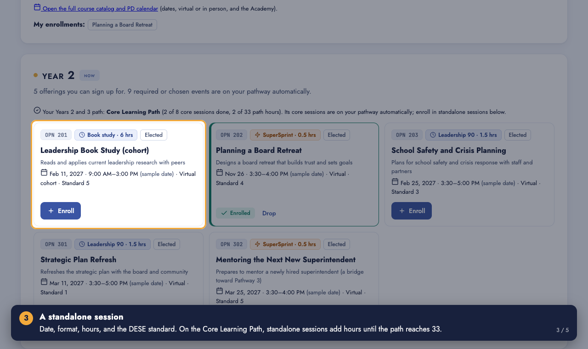
A standalone session: Date, format, hours, and the DESE standard. On the Core Learning Path, standalone sessions add hours until the path reaches 33.
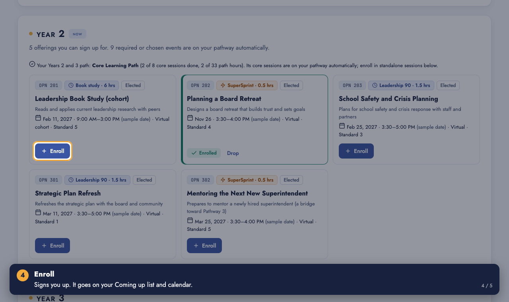
Enroll: Signs you up. It goes on your Coming up list and calendar.
Choose your Years 2 and 3 path
In Year 2 you choose one path for Years 2 and 3. Find it in the Course Catalog or in Year 2 on My Pathway.
Core Learning Path: ALEs 9, 10, 11, 12, 14, 16, 17, and 18, any time across both years, plus standalone sessions you enroll in until the path reaches 33 hours (the Academy’s hours).
Superintendent Leadership Academy: a 33-hour cohort academy (apply; fee). The ALE content is built in, so it counts for the eight ALEs.
Click Choose this. You can change it until you start; after that, ask your coach. Finish the path by the end of Year 3; the Year 3 Completion Badge and the certificate of completion need it.
My enrollments: Everything you have signed up for.A standalone session: Date, format, hours, and the DESE standard. On the Core Learning Path, standalone sessions add hours until the path reaches 33.Enroll: Signs you up. It goes on your Coming up list and calendar.
Log coaching, mentoring, and other hours
Open the Hours tab to see category totals and the hours log, then click Log hours.
Pick the category, hours, date, and the phase it counts toward, add a short note, and click Log hours. Log each regional meeting or conference as its own entry; each one counts toward the yearly number.
For Coaching or Mentoring, check the ALEs the session connected to. The Hours tab also lists the next ALEs coming up, so coaching and mentoring line up with the sessions.
Hours you log wait for a program administrator’s approval. Don’t include student names in notes.
Hours by category: Open Hours to see coaching, mentoring, and other learning totals.Hours log: Review dates, categories, phases, hours, and approval status. Notes follow the role’s privacy rules.
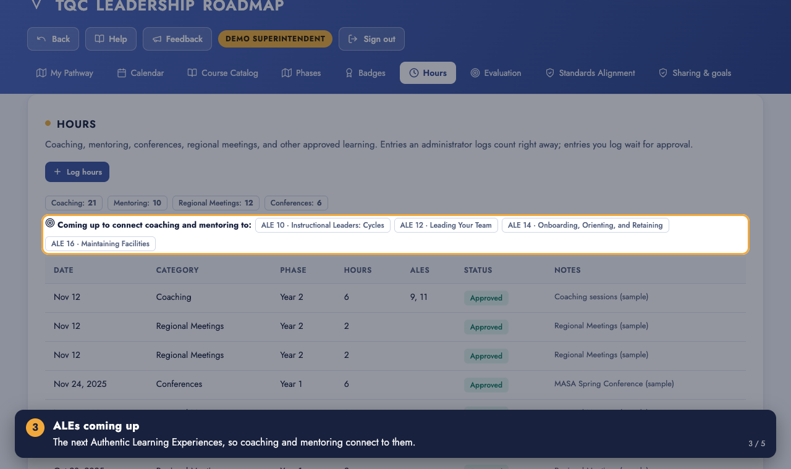
ALEs coming up: The next Authentic Learning Experiences, so coaching and mentoring connect to them.Log hours: Choose the category, hours, date, and phase; for coaching or mentoring, check the ALEs it connected to. Log each regional meeting or conference on its own line.
Ask to count equivalent learning
If you already did equivalent learning (prior experience, district training, a conference session), click Request substitution on that event.
Describe the learning and your evidence. Your coach and program administrators review it.
Request substitution: Count equivalent learning (prior experience, district training) in place of an event.
Badges and the MASA/TQC Pathway Certificate of Completion
Open the Badges tab. The strip at the top follows the three levels: Course/Session Completion, then Competency Series Badges (one or more for each DESE standard: Visionary, Instructional, and Managerial Leadership, Board Relations, Relationships and Culture, and Leadership Growth) and a completion badge for each year (Onboarding, Year 1, Year 2, and Year 3), then the MASA/TQC Pathway Certificate of Completion. Each series lists the performance indicators it covers. Click a session badge to open its standard in Standards Alignment, then use Back to return.
Each earned badge has Proof of growth: a printable page with the sessions, dates, the evidence each one produced, and the indicators covered, to share with your board president.
Earning all four yearly completion badges (finishing the full series of trainings) awards the MASA/TQC Pathway Certificate of Completion. Click Print certificate to print or save it as a PDF. Recognition at a MASA conference shows on the certificate badge.
It is a certificate of completion for a series of professional learning trainings, not a Missouri educator certificate, license, or endorsement, and not issued or endorsed by DESE.
Badges: Open Badges to review the yearly completion badges, Competency Series, and the MASA/TQC Pathway Certificate of Completion.
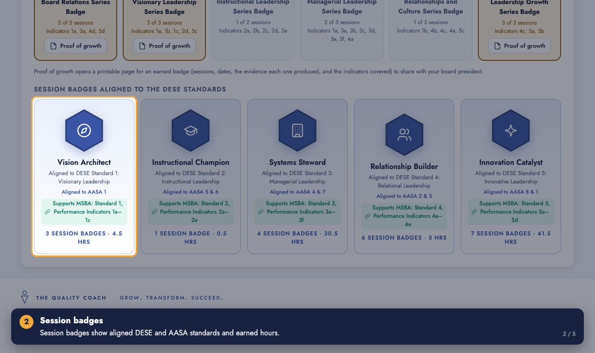
Session badges: Session badges show aligned DESE and AASA standards and earned hours.
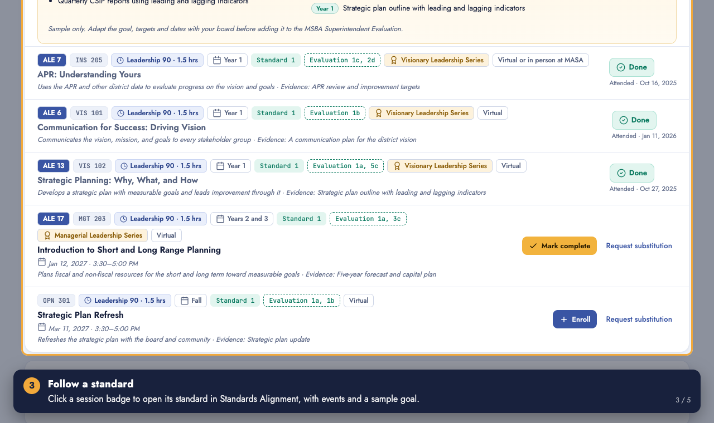
Follow a standard: Click a session badge to open its standard in Standards Alignment, with events and a sample goal.
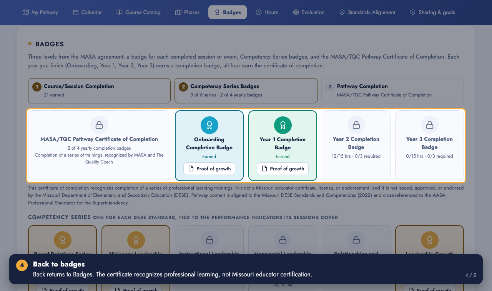
Back to badges: Back returns to Badges. The certificate recognizes professional learning, not Missouri educator certification.
Connect your badges to your board’s evaluation
Open the Evaluation tab and choose MSBA, MARE, your district’s own tool, or standards only. For a local tool, the superintendent or an administrator gives it a name and uploads a blank copy with no ratings or board comments. Ask the program team to add the alignment. Each course also lists the MSBA/DESE/MASA evaluation performance indicators it supports (for example, Evaluation 2a, 2d) on its row and its class page.
Open the Standards Alignment tab to see completed work grouped by DESE standard. Click Print report to bring it to your board. Your selected tool and alignment labels update immediately. Aligning evaluation… stays visible while the choice saves; you can browse other tabs. Wait for Evaluation saved before making another change for that person. If saving cannot be confirmed, the previous alignment is restored and a message explains how to refresh or retry. Mentors do not see this tab; coach and public demo choices are not saved.
Aligning evaluation: The selection and labels update immediately. This message stays visible while the choice saves; you can browse other tabs.
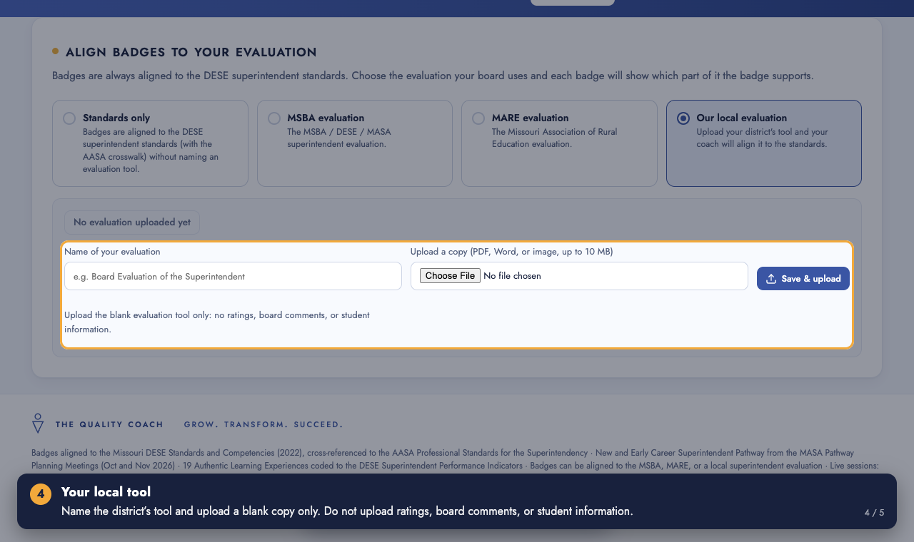
Your local tool: Name the district’s tool and upload a blank copy only. Do not upload ratings, board comments, or student information.
Use Standards Alignment and print your report
Open Standards Alignment. The report groups pathway events and earned hours under the five DESE superintendent standards, with an AASA crosswalk.
Use Expand all, Collapse all, or click one standard to see its events, evidence, and sample goal. Evaluation connections appear for roles allowed to see them.
Choose Print report to print or save the report as a PDF. Adapt sample goals and measures with your board; they are starting points.
Choose the board’s evaluation tool on the Evaluation tab. These alignments support evaluation; badges are professional learning recognition, not a Missouri educator credential.
Standards Alignment: Open Standards Alignment for pathway work grouped under the five DESE superintendent standards, with the AASA crosswalk.Expand the evidence: Expand all or open a single standard to review events, completed work, earned hours, and sample goals.Print report: Print or save the report as a PDF to discuss with your board. Adapt sample goals to your district.Collapse the report: Collapse all returns to a compact list. Evaluation details appear only for authorized roles.
Choose who sees what (Sharing & goals)
Open the Sharing & goals tab. Each person assigned to you (coach, mentor, MASA staff, board president) is listed separately.
Check what each one can see: Pathway, Standards Alignment, Hours, Evaluation goals / board report, and (coaches only) Coaching notes and submitted work.
Click Save sharing choices. It applies on their next click. Program administrators always see everything.
Your board president sees nothing until you share your goals, and then only your completed learning and those goals.
Announce your pathway completion
Open Sharing & goals and find When I complete the pathway.
Check Email my board president and, if you like, add up to five other people. Click Save.
The email goes once, when you earn the certificate (or right away if you already have). It names the pathway and the certificate and says you asked us to share it; nothing from your hours, notes, goals, or evaluation.
Write your evaluation goals
On Sharing & goals, scroll to My evaluation goals.
For each standard, add the evaluation area, your goal, and how you will measure success, then click Save evaluation goals.
Your goals appear in Standards Alignment next to the learning you completed, and in the report you can share with your board president.
Don’t enter ratings, confidential board comments, or student information.
Join a course discussion
Open Discussions in the course. A red number shows unread posts.
Open a topic, read the posts, and click Reply under one, or write your own and click Post. You can Remove your own posts.
Everyone taking the course, its instructors, and program administrators can read posts. Some discussions are graded; posting counts toward the course’s requirements.
Discussions: A red number shows posts you have not read.Read and reply: Click Reply under a post, or write your own and click Post. Instructors can remove any post; others remove their own.
Completion requirements, prerequisites, and credit
Each item can have a Completion requirement: View it, Mark it done, Post in the discussion, Turn it in, or Score at least a percent.
In Edit on a module, choose Prerequisites (finish these modules first) and whether items must be done in order. Learners see a lock and the reason.
When someone meets every requirement, and the course includes real work (turn in, a minimum score, or a discussion post), it goes to a program administrator to approve for pathway credit: the course’s hours, DESE standard, and badges. It counts once. Viewing alone never finishes a course, and course grades never feed the evaluation.
The editor: Format text, add images, links, YouTube or Vimeo videos, and documents. Set dates and the completion requirement.Learner preview: See exactly what learners see. Drafts and future items are hidden.
For coaches, mentors, and instructors
Regional meetings and conferences each year
Each year (Year 1, Year 2, and Year 3) you attend 4 or more regional meetings and at least 1 conference: the Spring Conference, Fall Conference, AASA Conference, or Women in Leadership Summit.
Log each one on the Hours tab (category Regional Meetings or Conferences). Each entry counts once toward the yearly number, and its hours count toward the phase.
The event row shows how many you have (for example, 2 of 4 attended). Tight Times Tuesdays is recommended, with a goal of attending at least 70% of the year’s sessions; log each one under Tight Times.
Leadership pipeline: Your total hours, phases completed, and what is left for the current phase badge.The four phases: Each phase earns a completion badge. Click a phase to see its events.Phase details: The ALEs and other required events, your Years 2 and 3 path, and the hours you have toward the badge.
Use the Phases tab
Open Phases. The four cards show Onboarding, Year 1, Year 2, and Year 3 with earned hours, required events, and badge status.
Click a phase card. Its detail lists required events, the Years 2 and 3 path, and learning hours for that phase. Onboarding is 8.5 hours (ALEs 1-5, 8, and 19); Year 1 is 57.5 (the Finance Academy, ALEs 6, 7, 13, and 15, mentor, and coach).
Click any class title to open materials, assignments, and completion information. Back returns to the selected phase.
Phases: Open Phases for Onboarding, Year 1, Year 2, and Year 3. Cards show badge status, hours, and required events.Phase details: Select a phase to see its ALEs, required events, your Years 2 and 3 path, and progress toward its badge.Open a class: Click a class title for session details, materials, and assignments.Back to the phase: Back returns to the Phases tab and the phase you selected.
Log coaching, mentoring, and other hours
Open the Hours tab to see category totals and the hours log, then click Log hours.
Pick the category, hours, date, and the phase it counts toward, add a short note, and click Log hours. Log each regional meeting or conference as its own entry; each one counts toward the yearly number.
For Coaching or Mentoring, check the ALEs the session connected to. The Hours tab also lists the next ALEs coming up, so coaching and mentoring line up with the sessions.
Hours you log wait for a program administrator’s approval. Don’t include student names in notes.
Hours by category: Open Hours to see coaching, mentoring, and other learning totals.Hours log: Review dates, categories, phases, hours, and approval status. Notes follow the role’s privacy rules.ALEs coming up: The next Authentic Learning Experiences, so coaching and mentoring connect to them.Log hours: Choose the category, hours, date, and phase; for coaching or mentoring, check the ALEs it connected to. Log each regional meeting or conference on its own line.
Badges and the MASA/TQC Pathway Certificate of Completion
Open the Badges tab. The strip at the top follows the three levels: Course/Session Completion, then Competency Series Badges (one or more for each DESE standard: Visionary, Instructional, and Managerial Leadership, Board Relations, Relationships and Culture, and Leadership Growth) and a completion badge for each year (Onboarding, Year 1, Year 2, and Year 3), then the MASA/TQC Pathway Certificate of Completion. Each series lists the performance indicators it covers. Click a session badge to open its standard in Standards Alignment, then use Back to return.
Each earned badge has Proof of growth: a printable page with the sessions, dates, the evidence each one produced, and the indicators covered, to share with your board president.
Earning all four yearly completion badges (finishing the full series of trainings) awards the MASA/TQC Pathway Certificate of Completion. Click Print certificate to print or save it as a PDF. Recognition at a MASA conference shows on the certificate badge.
It is a certificate of completion for a series of professional learning trainings, not a Missouri educator certificate, license, or endorsement, and not issued or endorsed by DESE.
Badges: Open Badges to review the yearly completion badges, Competency Series, and the MASA/TQC Pathway Certificate of Completion.Session badges: Session badges show aligned DESE and AASA standards and earned hours.Follow a standard: Click a session badge to open its standard in Standards Alignment, with events and a sample goal.Back to badges: Back returns to Badges. The certificate recognizes professional learning, not Missouri educator certification.
Connect your badges to your board’s evaluation
Open the Evaluation tab and choose MSBA, MARE, your district’s own tool, or standards only. For a local tool, the superintendent or an administrator gives it a name and uploads a blank copy with no ratings or board comments. Ask the program team to add the alignment. Each course also lists the MSBA/DESE/MASA evaluation performance indicators it supports (for example, Evaluation 2a, 2d) on its row and its class page.
Open the Standards Alignment tab to see completed work grouped by DESE standard. Click Print report to bring it to your board. Your selected tool and alignment labels update immediately. Aligning evaluation… stays visible while the choice saves; you can browse other tabs. Wait for Evaluation saved before making another change for that person. If saving cannot be confirmed, the previous alignment is restored and a message explains how to refresh or retry. Mentors do not see this tab; coach and public demo choices are not saved.
Aligning evaluation: The selection and labels update immediately. This message stays visible while the choice saves; you can browse other tabs.Your local tool: Name the district’s tool and upload a blank copy only. Do not upload ratings, board comments, or student information.
Use Standards Alignment and print your report
Open Standards Alignment. The report groups pathway events and earned hours under the five DESE superintendent standards, with an AASA crosswalk.
Use Expand all, Collapse all, or click one standard to see its events, evidence, and sample goal. Evaluation connections appear for roles allowed to see them.
Choose Print report to print or save the report as a PDF. Adapt sample goals and measures with your board; they are starting points.
Choose the board’s evaluation tool on the Evaluation tab. These alignments support evaluation; badges are professional learning recognition, not a Missouri educator credential.
Standards Alignment: Open Standards Alignment for pathway work grouped under the five DESE superintendent standards, with the AASA crosswalk.Expand the evidence: Expand all or open a single standard to review events, completed work, earned hours, and sample goals.Print report: Print or save the report as a PDF to discuss with your board. Adapt sample goals to your district.Collapse the report: Collapse all returns to a compact list. Evaluation details appear only for authorized roles.
See the superintendents you coach or mentor
You see only the superintendents assigned to you (from the Coach Email or Mentor Email on the roster).
Use the list at the top to switch people. Mentoring stays non-evaluative: mentors don’t see the evaluation or coaching notes.
Your roster: You see only the superintendents assigned to you, and only what each one shares with you.Pick a person: Switch between the people you coach or mentor.
Connect coaching and mentoring to the ALEs
On the Roster Dashboard, each superintendent shows their next ALEs (Next: ALE 6, 7, 13). The Hours tab lists them too.
When you log coaching or mentoring hours, check the ALEs the session connected to. They show in the hours log, so the coach who stays through Year 3 can see the thread.
Hours by category: Open Hours to see coaching, mentoring, and other learning totals.Hours log: Review dates, categories, phases, hours, and approval status. Notes follow the role’s privacy rules.ALEs coming up: The next Authentic Learning Experiences, so coaching and mentoring connect to them.Log hours: Choose the category, hours, date, and phase; for coaching or mentoring, check the ALEs it connected to. Log each regional meeting or conference on its own line.
Coaching versus teaching: what you can see
As a coach or mentor you see the superintendents assigned to you, limited by what each one shares on Sharing & goals. A coach they share “notes and submitted work” with can read their course work, but can’t grade it.
As a course instructor you manage only the courses you’re assigned to teach: you build them, see who is taking them, and review and grade the work turned in for them. Teaching doesn’t show you anyone’s evaluation, coaching notes, other courses, or records.
Being a coach or mentor doesn’t let you edit courses. A program administrator assigns instructors.
Review submissions: Every assignment, quiz, and graded discussion in one place.Grade and feedback: Read their work, score the rubric or points, and write feedback. Request revision opens a new attempt.
Build modules and lesson pages
Open My classes and a course, then Modules. Click Add module for each week, unit, or topic.
In a module, click Add to this module and choose Page, Video, Slide show, Resource, Assignment, Quiz, or Discussion.
Pages use the editor: bold, italic, headings, lists, links, Image (an https image link), Video (YouTube, Vimeo, Loom, or Google Drive), and Document links. To attach a file, use Attach a document on a resource or assignment (PDF, Word, PowerPoint, Excel; up to 10 MB).
Use ↑ ↓ to reorder modules and items, Edit to change them, and Duplicate to copy a module here or into another course you teach.
My classes: Every course you are assigned to teach. Coaches and mentors who teach keep their usual tabs too.Add a module: One per week, unit, or topic. Set prerequisites and an unlock date.Add to a module: Page, video, slide show, resource, assignment, quiz, or discussion.The editor: Format text, add images, links, YouTube or Vimeo videos, and documents. Set dates and the completion requirement.
Drafts, publishing, dates, and learner preview
New courses and anything you uncheck Published on are drafts: only instructors and administrators see them. Click Publish course when it’s ready.
Give any item Available from and Available until dates, and a Due date (or days after the session). Modules can have an Unlocks on date.
Click Learner preview to see exactly what someone taking the course sees. Click Exit learner preview to go back to editing.
Changes you save here show to learners on their next click. Edits typed straight into the spreadsheet show on the next click too (allow up to 10 minutes if another tool or script made the change).
Instructor tools: Learner preview and Publish. Review submissions is on Assignments.The editor: Format text, add images, links, YouTube or Vimeo videos, and documents. Set dates and the completion requirement.Learner preview: See exactly what learners see. Drafts and future items are hidden.Publish: Drafts are visible only to instructors and administrators until you publish.
Completion requirements, prerequisites, and credit
Each item can have a Completion requirement: View it, Mark it done, Post in the discussion, Turn it in, or Score at least a percent.
In Edit on a module, choose Prerequisites (finish these modules first) and whether items must be done in order. Learners see a lock and the reason.
When someone meets every requirement, and the course includes real work (turn in, a minimum score, or a discussion post), it goes to a program administrator to approve for pathway credit: the course’s hours, DESE standard, and badges. It counts once. Viewing alone never finishes a course, and course grades never feed the evaluation.
The editor: Format text, add images, links, YouTube or Vimeo videos, and documents. Set dates and the completion requirement.Learner preview: See exactly what learners see. Drafts and future items are hidden.
Create assignments and review work
Add an Assignment with instructions, an optional attached document, due and availability dates, and what people can turn in (a written response, a link, a file).
Choose grading: Complete / incomplete, Points, or a Rubric.
Open Assignments › Review submissions. Each person shows Not turned in, Submitted, Late, Missing, Needs revision, or Reviewed. Click Grade, read the work (open their file), score the rubric or points, write feedback, then Save grade or Request revision.
Open your course: Open a course you teach from My classes.Review submissions: Every assignment, quiz, and graded discussion in one place.Grade and feedback: Read their work, score the rubric or points, and write feedback. Request revision opens a new attempt.Grading and notifications: Default grading and which emails go to people taking the course.
Quizzes, question banks, and rubrics
In Settings › Quiz question bank, add multiple choice, true/false, short answer (list the accepted answers), and essay questions. Questions can be reused in any quiz in the course.
Add a Quiz in a module, check the questions to include, and set the attempts allowed. Choice and short answers are scored automatically; you score essays in Review submissions.
In Settings › Rubrics, add a rubric one row per line (what you look for | points | ratings), then choose it on an assignment or graded discussion.
Review submissions: Every assignment, quiz, and graded discussion in one place.Grade and feedback: Read their work, score the rubric or points, and write feedback. Request revision opens a new attempt.Question bank: Reusable multiple choice, true/false, short answer, and essay questions.Rubrics: One row per line: what you look for, points, and ratings.
Create and moderate discussions
In Discussions, click New discussion, write the prompt, and choose whether it’s graded (complete/incomplete or points).
Read and reply like anyone else. Remove hides a post (you still see it, marked removed).
Grade participation in Review submissions; it shows how many times each person posted.
Discussions: A red number shows posts you have not read.Read and reply: Click Reply under a post, or write your own and click Post. Instructors can remove any post; others remove their own.
Announcements and email notifications
On Home, click New announcement. You can schedule it with Show starting.
In Settings, choose which emails go out: new announcements, reviewed work, and day-before due reminders (an administrator turns reminders on in the sheet menu).
People can turn off a course’s emails on its Home page. The demo never sends email.
Announcements: Post news to everyone taking the course, now or on a date.The editor: Format text, add images, links, YouTube or Vimeo videos, and documents. Set dates and the completion requirement.
Templates, copying, and duplicating
In Settings, Save this course as a template copies its modules, pages, assignments, quizzes, questions, and rubrics (never anyone’s work or grades).
Add a template to another course, start a new course from one, or Copy all content from another course you teach.
In Modules, Duplicate copies one module here or into another course you teach.
Course details: Instructors are separate from coach and mentor roster assignments. You can start from a template.
For MASA staff
Use the Phases tab
Open Phases. The four cards show Onboarding, Year 1, Year 2, and Year 3 with earned hours, required events, and badge status.
Click a phase card. Its detail lists required events, the Years 2 and 3 path, and learning hours for that phase. Onboarding is 8.5 hours (ALEs 1-5, 8, and 19); Year 1 is 57.5 (the Finance Academy, ALEs 6, 7, 13, and 15, mentor, and coach).
Click any class title to open materials, assignments, and completion information. Back returns to the selected phase.
Phases: Open Phases for Onboarding, Year 1, Year 2, and Year 3. Cards show badge status, hours, and required events.Phase details: Select a phase to see its ALEs, required events, your Years 2 and 3 path, and progress toward its badge.Open a class: Click a class title for session details, materials, and assignments.Back to the phase: Back returns to the Phases tab and the phase you selected.
Badges and the MASA/TQC Pathway Certificate of Completion
Open the Badges tab. The strip at the top follows the three levels: Course/Session Completion, then Competency Series Badges (one or more for each DESE standard: Visionary, Instructional, and Managerial Leadership, Board Relations, Relationships and Culture, and Leadership Growth) and a completion badge for each year (Onboarding, Year 1, Year 2, and Year 3), then the MASA/TQC Pathway Certificate of Completion. Each series lists the performance indicators it covers. Click a session badge to open its standard in Standards Alignment, then use Back to return.
Each earned badge has Proof of growth: a printable page with the sessions, dates, the evidence each one produced, and the indicators covered, to share with your board president.
Earning all four yearly completion badges (finishing the full series of trainings) awards the MASA/TQC Pathway Certificate of Completion. Click Print certificate to print or save it as a PDF. Recognition at a MASA conference shows on the certificate badge.
It is a certificate of completion for a series of professional learning trainings, not a Missouri educator certificate, license, or endorsement, and not issued or endorsed by DESE.
Badges: Open Badges to review the yearly completion badges, Competency Series, and the MASA/TQC Pathway Certificate of Completion.Session badges: Session badges show aligned DESE and AASA standards and earned hours.Follow a standard: Click a session badge to open its standard in Standards Alignment, with events and a sample goal.Back to badges: Back returns to Badges. The certificate recognizes professional learning, not Missouri educator certification.
Use Standards Alignment and print your report
Open Standards Alignment. The report groups pathway events and earned hours under the five DESE superintendent standards, with an AASA crosswalk.
Use Expand all, Collapse all, or click one standard to see its events, evidence, and sample goal. Evaluation connections appear for roles allowed to see them.
Choose Print report to print or save the report as a PDF. Adapt sample goals and measures with your board; they are starting points.
Choose the board’s evaluation tool on the Evaluation tab. These alignments support evaluation; badges are professional learning recognition, not a Missouri educator credential.
Standards Alignment: Open Standards Alignment for pathway work grouped under the five DESE superintendent standards, with the AASA crosswalk.Expand the evidence: Expand all or open a single standard to review events, completed work, earned hours, and sample goals.Print report: Print or save the report as a PDF to discuss with your board. Adapt sample goals to your district.Collapse the report: Collapse all returns to a compact list. Evaluation details appear only for authorized roles.
Follow the program (MASA staff)
The Roster Dashboard shows every superintendent’s phase, hours, and badges, read-only.
You never see coaching notes, reflections, or evaluation details.
Course details: Instructors are separate from coach and mentor roster assignments. You can start from a template.
For board presidents: the shared report
A board president is added by a program administrator and signs in like everyone else (First time here, or forgot your password?).
They see one page: the superintendent’s completed learning by DESE standard, with any goals the superintendent chose to share. Click Print report to print it.
They see nothing until the superintendent shares, and never notes, hours, pending work, or evaluation settings.
Use the roster
Roster Dashboard shows everyone by phase, hours toward the badge, required events, and badges.
Search by name or district. Click View to open someone’s pathway, or the eye to see it exactly as they do (Superintendent View).
At a glance: How many superintendents are in each phase.Search: Find someone by name or district. Click View to open their pathway.Superintendent View: See exactly what that superintendent sees.
Approve sessions, hours, and substitutions
Waiting for approval (top of the roster) lists sessions marked complete, hours logged, and substitution requests.
Click Approve or Decline (a decline asks for a short reason the superintendent will see). Approved items count right away.
Waiting for approval: Sessions marked complete, hours logged, and substitution requests.Approve or Decline: Approved items count toward badges right away. A decline asks for a short reason.Superintendent View: See exactly what that superintendent sees.
Record attendance for a session
On the roster, click Record attendance, pick the session and date, check who attended, and click Save attendance.
Everyone checked gets credit at once. To credit one person, open their pathway and click Grant credit on the event.
At a glance: How many superintendents are in each phase.Record attendance: Give credit for a session to everyone who attended, at once.Attendance: Pick the session and date, check who attended, and click Save attendance.
Add a superintendent
Click Add superintendent, fill in name, email, district, dates, and their coach and mentor (with emails).
Leave Email a link to set a password checked so they can sign in.
At a glance: How many superintendents are in each phase.Superintendent View: See exactly what that superintendent sees.Add superintendent: Adds them to the roster and emails a link to set a password.Add a cohort: Paste a whole cohort from a spreadsheet and email everyone a sign-in link in one step.
Add a cohort (for example, the spring hires)
On the roster, click Add a cohort. Paste one person per line from a spreadsheet: Name, Email, District, and optionally Year 1 start, coach email, and mentor email (a header row works too).
Set Year 1 starts for lines without one, and leave Email each person a link checked so they can sign in. People already on the roster are skipped and listed.
Add superintendent: Adds them to the roster and emails a link to set a password.Add a cohort: Paste a whole cohort from a spreadsheet and email everyone a sign-in link in one step.
Engagement report and participant feedback
On the roster, click Engagement report: last sign-in, sign-ins in the last 30 days, events done, course pages opened, work turned in, posts, hours entries, and last activity for each superintendent. Counts only, never anyone’s work or notes.
Below it is the feedback people sent from the Feedback button at the top. Click Download CSV to bring the report into a spreadsheet for the post-pilot review.
At a glance: How many superintendents are in each phase.Superintendent View: See exactly what that superintendent sees.Engagement report: Sign-ins, sessions, and course activity for each superintendent (counts only), plus participant feedback, for the pilot review.
See which performance indicators the program covers
Open Standards Alignment. Program staff see Evaluation indicator coverage: each of the 23 performance indicators, the ALEs and sessions aligned to it, the series badges that include them, and other requirements.
All 23 indicators are covered in the current plan: 4b by the onboarding listening tours (ALE 8), 2c by Instructional Leaders: Cycles (ALE 10), 3e by Onboarding, Orienting, and Retaining (ALE 14), 4a by Maintaining Facilities (ALE 16), and 5a by the yearly regional meetings and conference. The Superintendent Leadership Academy carries the same indicators as the eight ALEs it replaces. An indicator marked Gap would need a session or requirement.
Change a session’s indicators in the Eval Indicators column on the Courses tab.
Manage sign-ins (People & sign-in)
Open People & sign-in. Add a person for coaches, mentors, MASA staff, or staff.
Email link sends a one-time link to set a password; Copy link gives you one to send yourself.
Change someone between Member and Admin, or Turn off an account (they are signed out right away).
On the roster without an account lists people named on the sheets who haven’t signed in yet.
Add a person: For coaches, mentors, MASA staff, and program staff.Email link: Emails a one-time link to set a password.Copy link: Makes a link you can send yourself.
Edit a superintendent’s profile and assignments
On the roster, click Edit (or Edit profile and assignments on their pathway).
Change their name, district, dates, coach, mentor, or board president (name and email), or uncheck Active to take them off the roster.
In People & sign-in, Edit name fixes how anyone’s name appears everywhere.
Create a course and assign instructors
Open the Classes tab and click Create a course: code (like LDR 301), title, phase, status, DESE standard, hours, and instructors’ emails. You can start from a template. It starts as a draft.
To change instructors later, open the course, then Settings › Edit class details and instructors. Instructor assignments are separate from coach and mentor roster assignments; any coach or mentor can also be an instructor.
Instructors get a sign-in link from “First time here, or forgot your password?”. Administrators can open, edit, and grade every course.
Create a course: Code, title, phase, standard, hours, and instructors. It starts as a draft.Course details: Instructors are separate from coach and mentor roster assignments. You can start from a template.Every course: Administrators can open, edit, and grade every course.
See exactly what a superintendent sees
Pick a superintendent and click Superintendent View. Click Exit preview in the yellow bar to return.
Superintendent View: See exactly what that superintendent sees.
Things you change on the spreadsheet
Courses: add a session’s Session Date, Session Time, and Link (meeting or materials, https); dated sessions appear on the public PD calendar. Modality says virtual or in person; ALE, Eval Indicators, and Count Required (yearly meetings) are there too. Add standalone sessions with Option CORE and Status Elected.
Phases and Options: hours, the Years 2 and 3 path (Choice “span”), and the Core Learning Path’s Hours Required (33).
Settings: BRAND_NAME, BRAND_LOGO_URL, BRAND_PRIMARY, and BRAND_ACCENT brand the public catalog and PD calendar.
Course Materials: each class’s materials and assignment (Type Resource or Assignment).
Settings: PROGRAM_NAME (site name), DEMO_MODE, DEMO_LOGINS and DEMO_LOGIN_PASSWORD, COMPLETION_APPROVAL, SUPPORT_EMAIL, TERMS_URL and PRIVACY_URL.
Sheet menu Growth Roadmap: add a sign-in account, back up the spreadsheet, and mark courses complete.